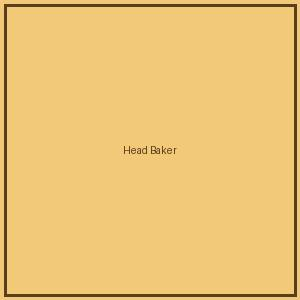
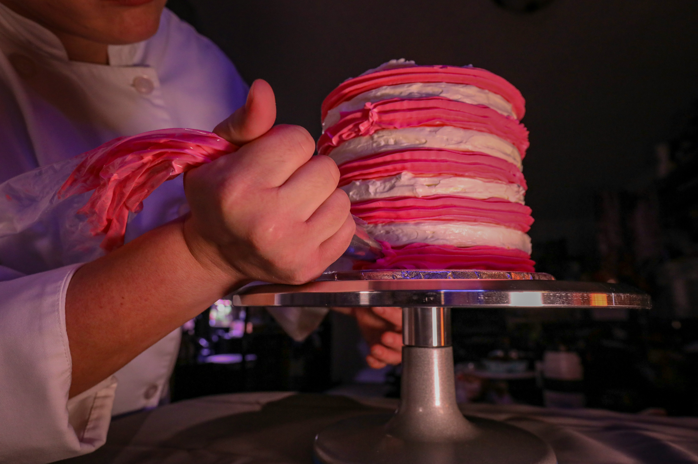

Head Baker
Leads daily bread and pastry production with over 10 years of baking experience.

Golden Crust Bakery is a family-owned bakery based in Durban, established in 2015. It began as a small home-baking operation run out of a family kitchen and has since grown into a beloved neighbourhood bakery known for artisanal bread, custom cakes, and pastries. Over the past decade, the bakery has built a loyal local customer base primarily through word-of-mouth and community events.
To bring high-quality, freshly baked goods to the community using traditional baking techniques and locally sourced ingredients.
To become the go-to bakery for celebrations and everyday treats across Durban, known for consistency, warmth, and craftsmanship.

Leads daily bread and pastry production with over 10 years of baking experience.

Designs and decorates every custom celebration cake by hand.